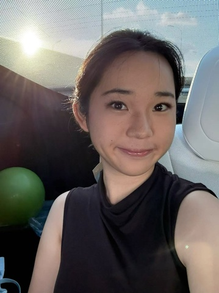

基本信息
1-page Resume (Encouraged，PDF格式，中英文均可)
Portfolio or Additional Files (Optional，PDF或视频)
请把文件名命为：first name_Last name_netid
请上传一张自己的照片，普通的生活照就可以！（只是为了面试的时候我们可以把你认出来）

查看原图
查看原图
通用问题部分
为什么想要加入CSSA？
我希望通过加入CSSA可以认识更多志同道合的朋友，有机会去帮助更多的人。与此同时，我还希望可以通过举办活动向大家学习各项能力，并且尽全力将自己在组织和团队合作中的经验发挥出来。
我愿意为团队投入时间和精力，希望在愉快紧密的氛围里与大家一起创造更有影响力的校园活动，让留学生活更充实～
你心目中CSSA是个什么样的组织？
在我看来，CSSA是一个凝聚华人学生、促进文化交流、提供帮助的平台。同时也给予了大家展示才华和认识新朋友的机会！对我和许多朋友而言，CSSA是校园中最有归属感的组织之一。在我刚进入康奈尔的时候，CSSA的新生手册，新生群校友群，以及多样的线下活动很好的帮助了我以及其他学生快速地适应环境。
加入CSSA之后，你最想在康奈尔校园内实现的事情是什么？
我希望可以和CSSA一起更好的凝聚和弘扬中国文化。为此，我希望可以尽最大力量去帮助落地各项合作。我希望通过曾金融方面的实习经验，优化辅助CSSA的资金管理；同时利用自己曾经student committee of the year、班长、话剧舞台管理等经验和各部门沟通协调，提供举办更大型活动的可能。
财务部
第一志愿为什么选择这个部门？
选择财务部是因为我希望可以发挥所长，帮助CSSA高效地管理资源。我具备良好的责任心和执行力，热爱学习和工作。我曾作为中学部president，领导组织超过 500 人的杭四歌手等活动，深刻理解预算管理与资金分配的重要性。同时作为经济和数学系的学生，这个学期还有选择会计课程，我希望可以借此提供更多帮助
秘书处
如果让你选择一周的工作，你想做什么？
为CSSA开发一个更全面更整合的“康村大众点评”：我注意到虽然CSSA的新生手册很全面并且会定期更新，但是住房和餐馆的很多信息都无法得到及时更新（e.g. koko等一些餐厅已经不再营业，有一些新的餐厅/菜单也难以得到更新）。民以食为天，我希望可以开发一个小程序性质的点评软件，可以更好的给同学们更新、更完善、更全面的餐厅饮食和住房租房推荐。
当别人第一次见到你时，他们会说“哇，你居然___！”（请填空）
话这么多而且第一次见面就能记住大家的名字！
某天深夜，一位新生在微信上非常焦急地询问：‘我的航班延误了了，接机联系不上怎么办？现在半夜一个人在机场好害怕...’
作为小助手值班的你，会如何回复？请写出具体回应（注意：你无法直接解决问题，但需要让TA感到安心）。
我会优先安抚这个同学的情绪，明确的告诉TA：“别担心，我会一直在线上陪TA，我们一步一步来！” 首先，我会告诉TA先到明亮人多较为安全的地方（问讯台、航空公司柜台等有工作人员或者有摄像头的地方），不要跟陌生人走，寻找插座保持手机电量。 然后，我会询问TA的航班号和位置，并且在电量允许的情况下和我进行实时定位，我会一直陪着他。 紧接着，在确认同学安全并且情绪平抚的同时，我会立即查官方渠道（机场巴士或类似交通的上车点、临时住宿）等信息，并且联系我认识的几个司机，寻求解决方案。 Note：重中之中是确保学生的安全和情绪，我会10分钟和TA确认一次，直到TA报平安并且问题得到解决。
你希望从秘书处的伙伴们和这份工作中获得什么？（比如：深厚的友谊？一份完美的简历？超硬核的技能？还是单纯的快乐？）
我想在真实的服务中把危机沟通、信息整合、团队协作等能力练到可复用。同时，在条件允许的可能下实现“康村大众点评”的从0到1。我非常期待收获志同道合的朋友，和享受完成工作的快乐，而不是只有简历上的一行字。
（可选）有人说“我们属于我们投入过心力的地方”。你希望自己在秘书处留下怎样的痕迹？
我希望可以在秘书处留下一些能让下一届直接拿来用的东西：例如“康村大众点评”，并交付维护机制：轻审核、轮值编辑与贡献者激励。希望留下的不只是一个想法，而是一套能活下去的系统。
同时，我更希望可以在秘书处留下一些快乐和关心的痕迹，让以后的学弟学妹们有被关心被鼓励的痕迹。
(可选) 秘书处传统：每次团建都要尝试一个奇奇怪怪的新活动。你有什么离谱但有趣的idea吗？（多奇怪都行）
我一直很想玩大家往一个桶里面倒饮料，然后每个人都不知道前面那个人倒了什么，然后大家倒完一起喝一起唱歌一起打牌一起聊天吃饭的感觉！
第二志愿为什么选择这个部门？
选择秘书处是因为我真心的很喜欢帮助别人，并且我很喜欢和人建立连接，我希望通过CSSA秘书处这个平台去更好更多地关心别人。此外，我熟悉Notion、Excel、石墨文档等工作软件，并且有参加多项NGO和NPO的经验，在里面多次负责整合沟通等角色，有一定的经验，因此希望将这些发挥到CSSA中。
是否接受部门调剂？
是